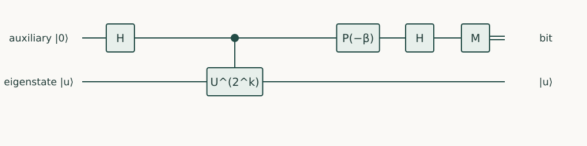

Quantum Algorithms · Chapter 11 · Draft lesson
Adaptive Measurement
When should the result of a measurement change the rest of the computation?
Chapter direction
Starting point: Chapters 2–5 and conditional measurement and teleportation from Quantum Computing.
Anchor example: Reading a phase one bit at a time using a reusable auxiliary qubit.
This lesson includes explanations, worked examples, and problems with solutions. Advanced results whose proofs are outside the chapter are identified explicitly.
11.1 Conditional Computation
A measurement need not be the last instruction. A recorded bit can select the next basis or correction. The task is to track both the conditional quantum state and the classical record, so that adaptation changes the computation in a controlled way.
11.1.1 Branches and classical records
If a measurement has branch operators \(M_b\), outcome b has probability \(p_b=\|M_b\psi\|^2\), and the conditional state is \(M_b\ket\psi/\sqrt{p_b}\). A later unitary \(V_b\) acts on that branch. If records are ignored, the output is described by the mixture \(\sum_b V_bM_b\ket\psi\bra\psi M_b^\dagger V_b^\dagger\). Branch probabilities add; amplitudes of different recorded outcomes do not interfere. A zero-probability branch needs no normalized conditional state.
11.1.2 Deferred measurement and coherent control
A computational-basis measurement followed by a classically selected gate can often be deferred by keeping the measured qubit and using it as a coherent control. Measuring that retained record at the end reproduces the same statistics of the remaining outputs. The coherent version may need extra qubits and a controlled gate, while the measured version may reuse qubits but incur feedback latency. Deferral preserves an appropriate output distribution; it does not say the intermediate states, resources, or discarded records are identical.
Problem 11.1. In iterative estimation of φ=1/4 with two bits, which bit is learned first?
Worked solution
The least significant bit b2 is zero, using U². The next stage uses U and learns b1=1. The classical string is 01 in least-significant-first acquisition order but 0.10 as the binary phase.
11.2 Adaptive Estimation
11.2.1 Iterative phase estimation
For exact \(\phi=0.b_1\ldots b_m\) and an eigenstate of U, one auxiliary qubit can recover bits from the least significant upward. At stage k, descending from m to 1, use controlled-\(U^{2^{k-1}}\). The control’s phase modulo 2π is \(2\pi(0.b_kb_{k+1}\ldots b_m)\). Apply a phase correction of \(-2\pi\sum_{j=k+1}^m b_j2^{k-1-j}\) using already obtained bits, then H and measure. The residual phase is πbk, so the outcome is bk exactly.
11.2.2 Feedback and confidence
For \(\phi=3/8=0.011\), the stages use powers 4,2,1. Power four gives phase 1/2 and bit b3=1. Power two gives phase 3/4; subtract 1/4 to obtain b2=1. Power one gives 3/8; subtract 1/4+1/8 to obtain b1=0. Nonterminating phases make the bits probabilistic, so this exact example is not a confidence theorem. Repeated likelihood-based measurements or carefully analyzed iterative schemes must account for wrong feedback. Reusing one auxiliary saves width, not the total controlled-power cost.
Problem 11.2. What gate appears in the one-bit teleportation step at α=0?
Worked solution
The output is \(X^mH\ket\psi\), so applying X when m=1 gives \(H\ket\psi\). Each branch has probability one half independent of the input.

11.3 Measurement-Based Methods
11.3.1 Teleportation as a computational step
Prepare an unknown input \(\ket\psi=a\ket0+b\ket1\) and an auxiliary plus, then apply controlled-Z between them. Measuring the input in the basis \(\ket{\pm_\alpha}=(\ket0\pm e^{i\alpha}\ket1)/\sqrt2\) leaves, for outcome m=0 or 1, the unnormalized auxiliary state
\[\frac1{\sqrt2}X^m H P(-\alpha)\ket\psi,\qquad P(\beta)=\mathrm{diag}(1,e^{i\beta}).\]
Expand the input as \(a\ket0\ket++b\ket1\ket-\) to verify it. Each outcome has probability one half. The intended gate appears on a different physical qubit, accompanied by a known Pauli byproduct. This is a computation step by measurement, not cloning.
11.3.2 Resource states and measurement-dependent corrections
Chain such entangled auxiliaries to execute several steps. The identity \(P(\alpha)X=e^{i\alpha}XP(-\alpha)\) shows why an X byproduct can reverse the sign of a later measurement angle. A classical record can update future bases or retain a Pauli frame for final interpretation. Resource-state preparation, entangling gates, measurement precision, feedforward, and output corrections all count. Replacing coherent depth by measurement steps does not automatically reduce total cost. This completes the technique sequence: algorithm design means selecting compatible access, interference, readout, and resource assumptions, then composing them with a proof.
Problem 11.3. Why cannot a branch selected by an unknown measurement outcome simply be assumed successful?
Worked solution
Postselecting it changes the success probability and expected number of attempts. A deterministic protocol must correct or use every nonzero branch, or explicitly report failure.
The course now supplies a connected set of algorithmic techniques. Quantum Programming turns these contracts and calculations into executable, tested circuits.
Sources and further study: Griffiths and Niu, Semiclassical Fourier Transform; Raussendorf and Briegel, A One-Way Quantum Computer.